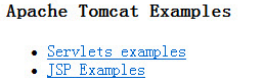

7.5 Socket编程
所谓Socket通常也称作套接字，应用程序通常通过套接字向网络发出请求或者应答网络请求。Java语言中的Socket编程常用到Socket和ServerSocket这两个类，它们位于java.net包中。
7.5.1 基于TCP的Socket编程
ServerSocket用于服务器端，而Socket是建立网络连接时使用的。在连接成功时，应用程序两端都会产生一个Socket实例，操作这个实例，完成所需的会话。对于一个网络连接来说，套接字是平等的，不因为在服务器端或在客户端而产生不同级别。不管是Socket还是ServerSocket，它们的工作都是通过SocketImpl类及其子类完成的。关于Socket、ServerSocket及SocketImpl类的具体方法，这里不再一一介绍，需要这些类时，请大家自行查阅JDK API文档。
图7.5展示了基于TCP的Socket编程的示意图。

图7.5 基于TCP的Socket编程
在服务器端，创建一个ServerSocket对象，并指定一个端口号，使用ServerSocket类的accept()方法使服务器处于阻塞状态，等待用户请求。
在客户端，通过指定一个InetAddress对象和一个端口号，创建一个Socket对象，通过这个Socket对象，连接到服务器。
首先来看服务器端程序，具体代码如下：
import java.net.*;
import java.io.*;
public class TestServer{
public static void main(String args[]) {
try{
//创建一个ServerSocket对象，并指定端口号[[张彬2\]](#_msocom_2) 8888
ServerSocket s = new ServerSocket(8888);
while(true){
//侦听并接受到此套接字的连接
Socket s1 = s.accept();
OutputStream os = s1.getOutputStream();
DataOutputStream dos = new DataOutputStream(os);
dos.writeUTF("客户端IP：" + s1.getInetAddress().getHostAddress() + "
客户端端口号：" + s1.getPort());
dos.close();
s1.close();
}
}catch (IOException e) {
e.printStackTrace();
System.out.println("程序运行出错！");
}
}
}
该服务器端程序的作用就是监听8888端口，当有发送到本机8888端口的Socket请求时，建立输出流，将通过accept()方法创建的Socket对象的IP地址和端口号输出到客户端。编译、运行程序，使服务器启动并处于监听状态。
下面编写客户端程序，具体代码如下：
import java.net.*;
import java.io.*;
public class TestClient{
public static void main(String args[]){
try{
//通过IP地址和端口号，创建一个Socket对象
Socket s1 = new Socket("127.0.0.1", 8888);
//建立输入数据流
InputStream is = s1.getInputStream();
DataInputStream dis = new DataInputStream(is);
System.out.println(dis.readUTF());
dis.close();
s1.close();
}catch(ConnectException e){
e.printStackTrace();
System.err.println("服务器连接失败！");
}catch(IOException e){
e.printStackTrace();
}
}
}
该客户端程序通过IP地址127.0.0.1和端口号8888，创建一个客户端Socket对象，建立输入数据流，通过输入数据流读取指定IP地址和端口号上服务器端程序的输出，并在控制台将服务器的输出显示出来。编译、运行程序，运行结果如图7.8所示。

图7.8 使用Java Socket编程
在这个通过Java Socket编程实现的客户端、服务器端程序中，客户端没有请求的具体内容，只要有请求，服务器就将指定的内容发送给客户端，客户端将接收的内容显示出来。接下来对上面的案例进行调整，服务器端可以接收客户端请求的内容，并显示在服务器端控制台上。服务器端程序具体代码如下：
import java.io.*;
import java.net.*;
public class TestSockServer {
public static void main(String[] args) {
InputStream in = null;
OutputStream out = null;
try{
ServerSocket s = new ServerSocket(8888);
Socket s1 = s.accept();
in = s1.getInputStream();
out = s1.getOutputStream();
DataOutputStream dos = new DataOutputStream(out);
DataInputStream dis = new DataInputStream(in);
String str = null;
if((str = dis.readUTF())!= null) {
System.out.println("客户端输入内容：" + str);
System.out.println("客户端IP：" + s1.getInetAddress().getHostAddress());
System.out.println("客户端端口号：" + s1.getPort());
}
dos.writeUTF("服务器端反馈客户端！");
dis.close();
dos.close();
s1.close();
}catch(IOException e){
e.printStackTrace();
}
}
}
客户端具体代码如下：
import java.net.*;
import java.io.*;
public class TestSockClient {
public static void main(String[] args) {
InputStream is = null;
OutputStream os = null;
String s = null;
try{
Socket socket = new Socket("localhost",8888);
is = socket.getInputStream();
os = socket.getOutputStream();
DataInputStream dis = new DataInputStream(is);
DataOutputStream dos = new DataOutputStream(os);
//客户端向服务器端发送请求的内容
dos.writeUTF("客户端提交服务器");
if((s = dis.readUTF()) != null)
System.out.println(s);
dos.close();
dis.close();
socket.close();
}catch(UnknownHostException e){
e.printStackTrace();
}catch(IOException e){
e.printStackTrace();
}
}
}
编译、运行服务器端、客户端程序，运行结果分别如图7.9和图7.10所示。

图7.9 Socket编程服务器端

图7.10 Socket编程客户端
7.5.2 基于UDP的Socket编程
UDP是用户数据报协议，它提供的是无连接、不可靠信息传送服务。Java 主要提供了两个类来实现基于UDP的Socket编程。
DatagramSocket：此类表示用来发送和接收数据报包的套接字。数据报套接字是包投递服务的发送或接收点，每个在数据报套接字上发送或接收的包都是单独编址和路由的。从一台机器发送到另一台机器的多个包可能选择不同的路由，也可能按不同的顺序到达。在 DatagramSocket上总是启用UDP广播发送。
DatagramPacket：此类表示数据报包。数据报包用来实现无连接包投递服务，每条报文仅根据该包中包含的信息从一台机器路由到另一台机器。
图7.11展示了基于UDP的Socket编程的示意图。

图7.11 基于UDP的Socket编程
DatagramPacket类主要有两个构造函数。
一个用来接收数据DatagramPacket(byte[] recyBuf, int readLength)，用一个字节数组接收UDP包，recyBuf数组在传递给构造函数时是空的，而readLength值用来设定要读取的字节数。
一个用来发送数据DatagramPacket(byte[] sendBuf, int sendLength, InetAddress iaddr, int port)，建立将要传输的UDP包，并指定IP地址和端口号。
接下来通过一个案例来演示Java如何实现基于UDP的Socket编程，其中服务器端代码如下：
import java.net.*;
import java.io.*;
public class TestUDPServer{
public static void main(String args[]) throws Exception
{
//创建数据报包的套接字，端口号8888
DatagramSocket ds = new DatagramSocket(8888);
byte buf[] = new byte[1024];
//创建接收的数据报包
DatagramPacket dp = new DatagramPacket(buf,buf.length);
System.out.println("服务器端：");
while(true)
{
//从此套接字接收数据报包
ds.receive(dp);
ByteArrayInputStream bais = new ByteArrayInputStream(buf);
DataInputStream dis = new DataInputStream(bais);
System.out.println(dis.readLong());
}
}
}
客户端代码如下：
import java.net.*;
import java.io.*;
public class TestUDPClient{
public static void main(String args[]) throws Exception
{
long n = 10000L;
ByteArrayOutputStream baos = new ByteArrayOutputStream();
DataOutputStream dos = new DataOutputStream(baos);
dos.writeLong(n);
byte[] buf = baos.toByteArray();
System.out.println("客户端：");
System.out.println(buf.length);
//创建数据报包的套接字，端口号9999
DatagramSocket ds = new DatagramSocket(9999);
//创建发送的数据报包
DatagramPacket dp = new DatagramPacket(buf, buf.length,
new InetSocketAddress("127.0.0.1", 8888));
//从此套接字发送数据报包
ds.send(dp);
ds.close();
}
}
编译、运行程序，运行结果如图7.12和图7.13所示。

图7.12 UDP Socket编程服务器端

图7.13 UDP Socket编程客户端